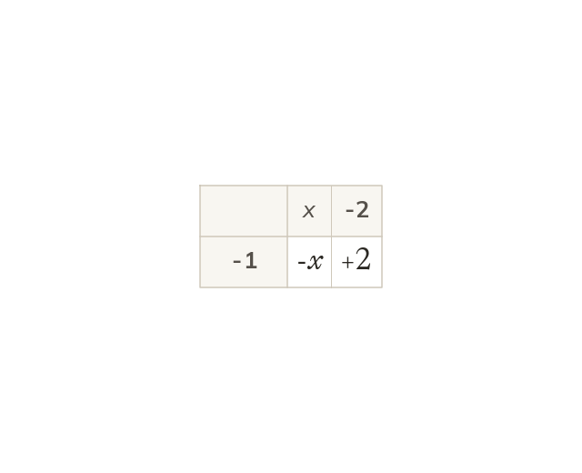

Expanding several brackets
Expand one bracket at a time, then collect like terms. Subtracting a bracket changes every sign inside it. So 5 - (x - 2) = 5 - x + 2.
An expression with several brackets is expanded one bracket at a time, then like terms are collected. Subtracting a whole bracket changes the sign of every term in it: 5 - (x - 2) = 5 - x + 2.